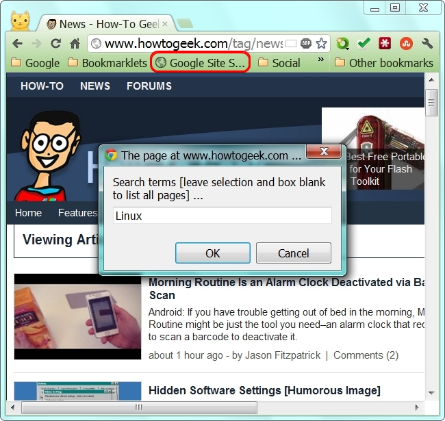
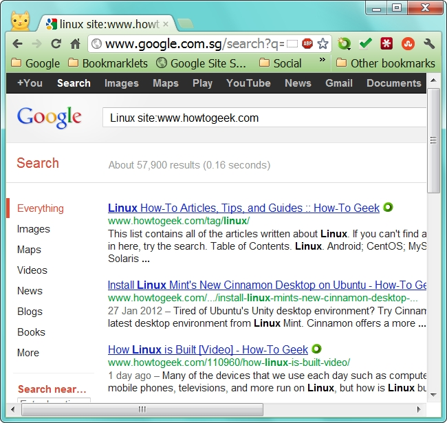

How-To Geek
Awesome Bookmarklet Collection Ready to Select from and Add to Your Browser
Bookmarklets are extremely useful additions to have for your everyday browsing needs without the hassle (or slowdown effect) of extensions. With that in mind tech blog Guiding Tech has put together a terrific collection of 21 bookmarklets that are ready to add to your favorite browser.
Just scroll down and select/install the bookmarklets you like from the blog post and enjoy the enhanced browsing!
You can see the beginning and end results from our sample use of the Search Site Bookmarklet in the screenshots above and below…
Note: We altered the bookmarklet slightly to focus the search results through Google Singapore.

Special Note
From Guiding Tech: All the links in this article are direct bookmarklet links and you just need to drag these links to your bookmarks toolbar in the browser to start using them. However, certain bookmarklets might not be compatible with particular browsers so we’ve also given the source page for each so that you may directly install it from their official page if you face an issue installing it directly from here.
21 Incredibly Useful Bookmarklets For Better Online Browsing [Guiding Tech]
- Published 04/12/12
![]()
![]()
![]()
![]()
![]()
![]()
![]()
![]()
![]()

saw a few handy ones there A.A. no doubt.
: )
@vistual – Me too. ^_^
I found a few. Thanks.
I like how a few of those let you search websites. Those must have been made with Chrome in mind. In Firefox, I just select the text, choose my search provider, right click the text, and choose search. Google, Wikipedia, and IMDb are the most handy for general use. Bing is a nice alternative to Google if I want a second opinion. I have GSM Arena to pull up specs on phones. And Google Play Apps to look up Android apps that people mention, and Mozilla Add-Ons for extensions.
The only bookmarklet I have is KeepVid’s. From any YouTube video, I can click it to be taken to a page where I can save the video. My 1.5MBit connection sucks even for 360p videos, so it’s better to just download the video in 720p or 1080p and watch it at full rez.